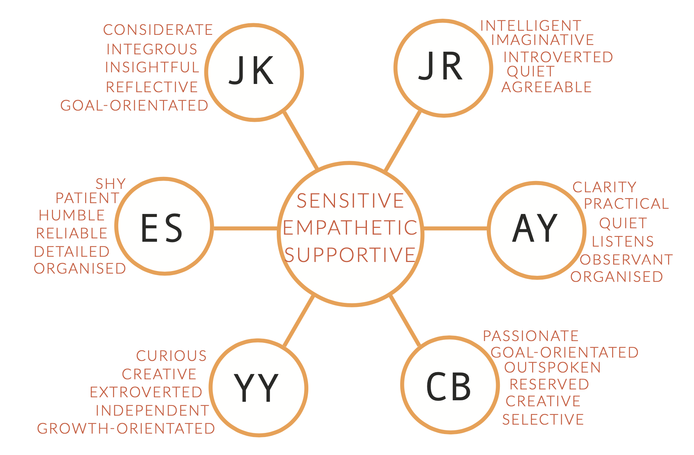
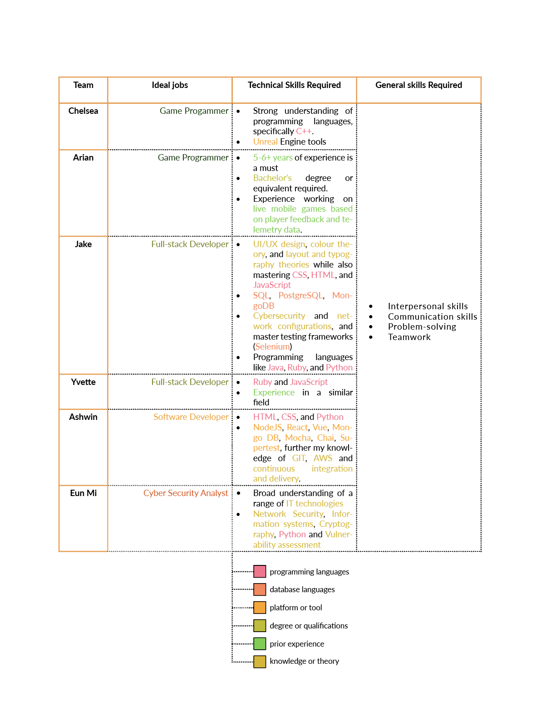
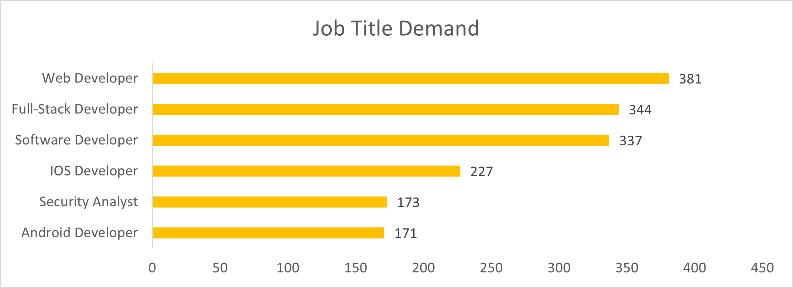
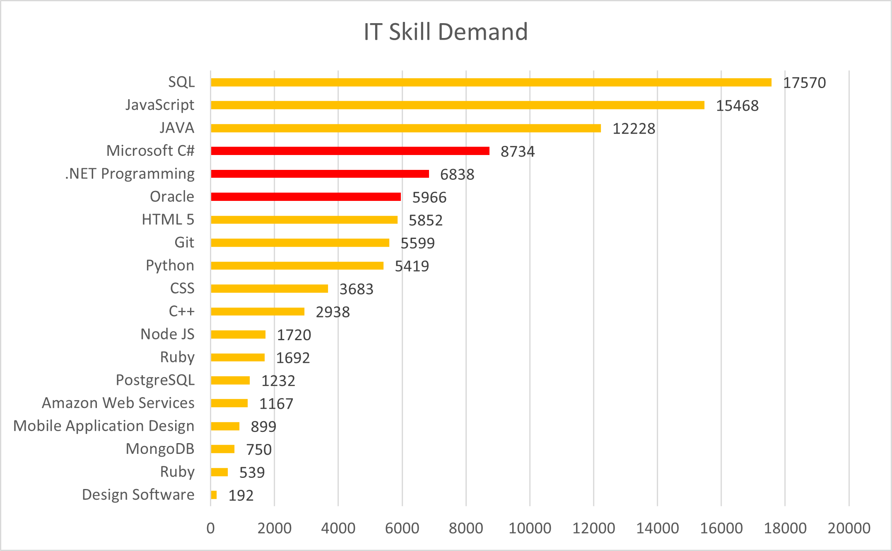
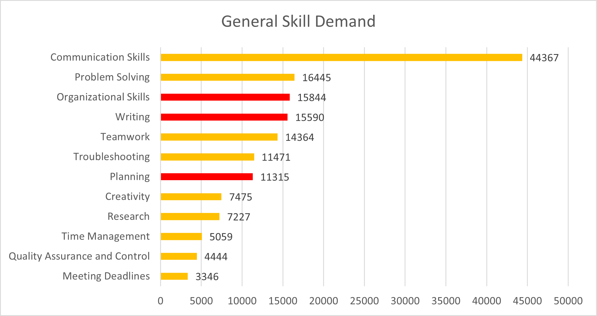
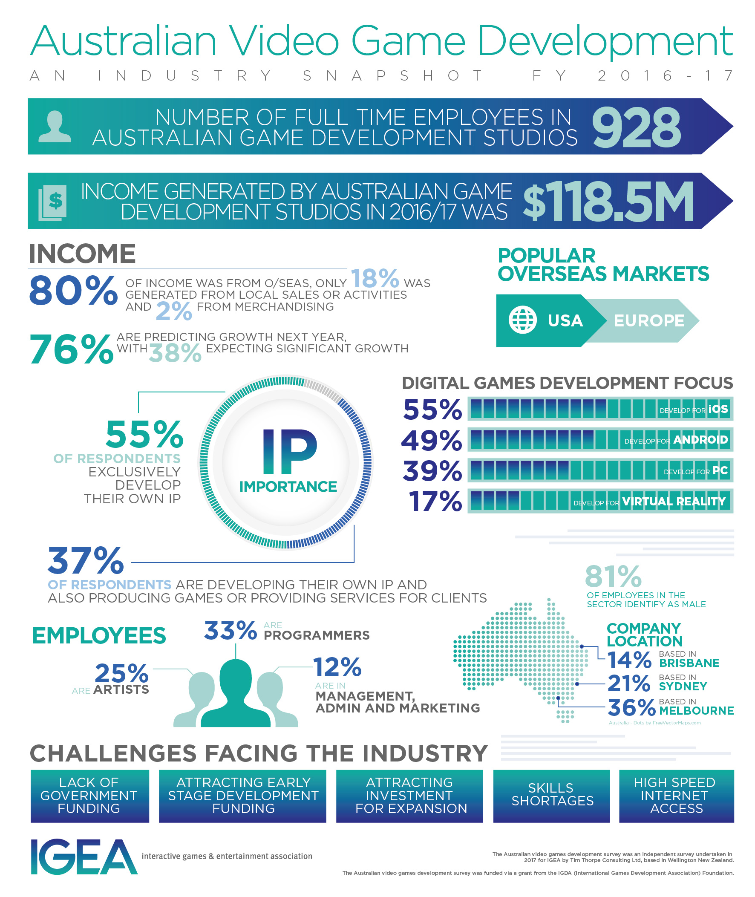
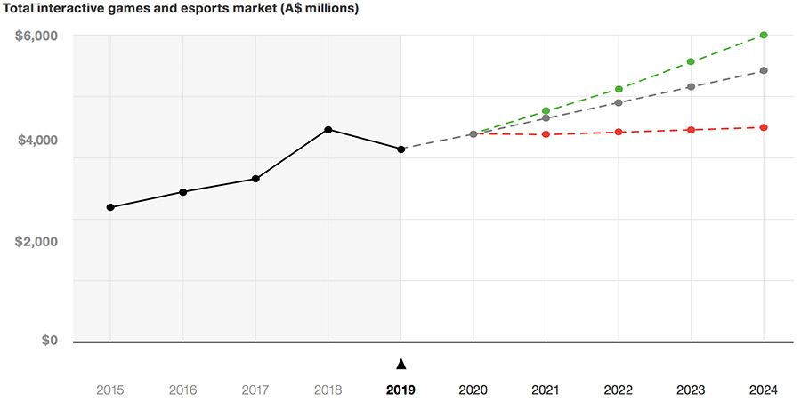
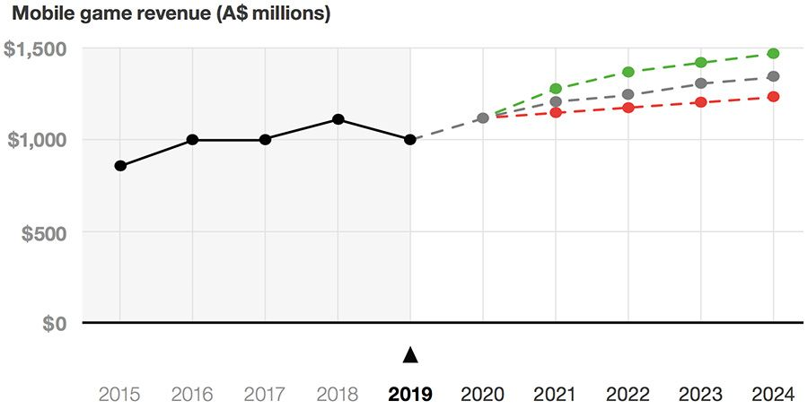

MEET THE TEAM
Click on the headshots to read more:


GROUP PROCESSES
As a group, there was a strong consensus that the dynamics between all group members contributed greatly to a successful outcome for Assignment 2. To improve efficiency, we implemented a team leadership structure which provided clarity, seamlessly streamlining communications and workflows. What worked to our advantage was that we were able to rely on each other in the sub-division of tasks. Additionally, we established a constant feedback loop and maintained communications during each stage of the assessment process.
After receiving our Assignment 2 results it became clear that the team had not collaborated enough on the website. There will be an increased focus on this for Assignment 3 and the team will allocate more time on that aspect of the assessment. Considering the increased collaborative nature of Assignment 3, the communication loop will have to be maintained if not strengthened. The team will also need to self-organise earlier to meet the demands of Assignment 3; this will essentially be managed in MS Teams in terms of roles, responsibilities, tasks, schedules, checklists and meeting minutes. We will also need to ensure that our individual SparkPlus feedback is specific on how each member contributed to the team.

First, we have discovered a lot of similarities among us. Most of us share characteristics such as being sensitive, empathetic and supportive. These characteristics will play a significant role in our group by facilitating the building of relationships and a friendly environment. In team meetings, we will begin with personal conversation to make everyone feel comfortable and welcome, rather than going to business immediately. In addition, we will have casual chats anytime, for any matter, via Discord, to further consolidate our relationships. This will help the team overcome being shy by encouraging us to open up more, and will eventually lead us to developing the confidence to voice our individual opinions, thus improving our communication as a team.
According to the test results, we lack leadership, which is one of the essential attributes for success. We need someone who can take the lead and help delegate tasks, check our progress and volunteer when decision-making is required. If the team worries about others’ feelings too much, people may hesitate to ask questions, give feedback or make decisions, preventing us from progressing. With a passionate, outspoken and goal-oriented personality as an advocate, Chelsea is a strong candidate who can help with this issue, and she kindly agreed to take the leader role. Jake is also an advocate type and will assist in the leading role. Eun Mi and Arian can contribute to organising and maintaining the team’s progress with their organisational skills. Ashwin and Yvette can bring their creativity and intelligence to the problem-solving aspects and presentation of the team assignment.
IDEAL JOBS
After comparing everyone’s ideal job, we have discovered some of us had the same ideal job; both Chelsea and Arian goals are to be game programmers, and Jake and Yvette want to be full-stack web developers. Ashwin’s ideal job is a software developer, and Eun Mi’s is to become a cybersecurity analyst. Apart from Eun Mi, everyone wants to be a type of developer, and technical skills are essential. Learning programming languages such as Java, Ruby, Python, HTML, CSS, and C++ are common elements for becoming a developer. On the other hand, Eun Mi requires a broad range of IT knowledge and a solid understanding of network security and systems. Though she does not need to learn programming or database languages in-depth, she might still need to understand a bit of Python. For Ashwin, platform and tool knowledge are additional useful skills.
Most of us have a little bit of knowledge and experience with some of these tech skills. We want to pursue them further professionally, which is the primary motivation for enrolling in ‘Introduction to Information Technology’ at RMIT, which is prerequisite for completing a computer science qualification. Working experience in our desired field seems to be crucial as well, such as participating in an internship to gain familiarity and guidance from experienced professionals.
Apart from tech skills, we also need general skills. We all agreed communication skills, interpersonal skills, problem-solving skills, and teamwork skills are essential in working in a group and interacting with the management team or clients. Regardless of which area one will be working in, these are the fundamental skills employers are seeking. We believe we can develop these general skills while we work on assignments as a group.

INDUSTRY DATA
Burning Glass
Job Title and Employer Demand
Team Code-Cats have a diverse range of ideal job positions – Chelsea and Arian are looking for the game programmer position, Jake and Yvette aspire to be full-stack web developers. Ashwin, a software developer, and Eun Mi a cyber security analyst. These titles collectively boast a broad skillset. Game programmers require extensive knowledge of programming languages, in Chelsea’s case, especially C++, game development specific tools and knowledge of game engines such as the Unreal Engine. Arian’s ideal position requires 5-6 years of experience, a bachelor’s degree in a related field and experience working with mobile game.
Similarly, Jake and Yvette as full-stack web developers require extensive knowledge in programming languages – including Java, Ruby and Python. Additionally, Jake’s ideal job requires experience and knowledge in fields outside IT as a full stack developer necessarily needs to contribute to other aspects of a complete web project – these skills include user interface and experience design, colour, and typography theories. Backend skills such as knowledge of databases (such as SQL, PostgreSQL, and MongoDB), networking and cybersecurity are also required. Both Yvette and Jake also require experience and knowledge of web design such as HTML, CSS, and JavaScript. Eun Mi requires specialized knowledge on network security, information systems, cryptography, and vulnerability assessment, augmented with a broad understanding of a range of IT Technologies and programming languages, especially Python.
In terms of employer demand – web developers rank the highest with 381 postings available in March 2017 – Feb 2018. Full-stack developers rank second with 344 postings in March 2017 – Feb 2018 and security analysts with 173 postings from March 2017 – Feb 2018. There were also 227 IOS developer postings and 171 Android Developer postings (Burning Glass Technologies 2018c, 2018e).

Figure 1: IT Job Demand Australia and New Zealand Dec. 24, 2017 - Mar. 23, 2018, Labour Insight Jobs by Burning Glass Technologies, 2018c.
IT Specific Skills
As a team, Code – Cat’s required skill set consist of a wide range of skills. IT specific skills related to programming languages are knowledge of C++, CSS, HTML, JavaScript, Java, Ruby and Python. Database related skills consist of SQL, PostgreSQL, MongoDB. Skills using platforms and services include NodeJS, GIT and Amazon Web Services. Vue and React to create interfaces, Mocha and Chai for testing. Additionally, broader skills and knowledge is required in continuous integration and delivery (CI/CD), network security, information systems, cryptography, and vulnerability assessment. Several other specialist skills such as UI/UX, graphic design, colour and typography theory are also required. In terms of demand, the skill which ranks the highest is SQL, a database and programming language; followed by JavaScript and JAVA. Most popular programming languages are similar in demand with services and niche programs at the tail end. The three highest ranked IT specific skills not in the group’s skill set (marked in red on table) are Microsoft C# with 8734 postings, .NET Programming with 6836 postings and Oracle with 5966 postings (Burning Glass Technologies 2018b, 2018d).

Figure 2: IT Skill Demand in Australia and New Zealand Dec. 24, 2017 - Mar. 23, 2018, Labour Insight Jobs by Burning Glass Technologies, 2018b.
General Skills
In addition to IT specific skills, employers also require several general skills. Code – Cat’s primary required general skills are interpersonal skills, communication skills, problem solving and teamwork. Troubleshooting, creativity, research skills, time management, quality assurance and control, and meeting deadlines are also required. Employer demand ranks communication skill as the most sought after, followed by problem solving and teamwork. The top three highly ranked general skills that are not required by Code – Cats (marked in red on table) are organizational skills, writing, and planning (Burning Glass Technologies 2018a, 2018b).

Figure 3: General Skill Demand in Australia and New Zealand Dec. 24, 2017 - Mar. 23, 2018, Labour Insight Jobs by Burning Glass Technologies, 2018a.
Gaming Industry Data
The burning glass data provided did not mention many specific game development skills; two members of Code-Cats have ideal jobs in the industry. As such we are including some other data found specific to this segment of IT. The video game industry in Australia is a sizable portion of the IT sector, it was worth 2.96 billion in 2017 (Brand et al., cited in IGEA 2018).

Figure 4: Australian Video Game Development 2016-2017 by IGEA, 2018
During the global Coronavirus pandemic, there was a significant surge, going up to 3.4 billion (Consultancy.org 2021). With the mobile gaming industry (Arians chosen field) consisting of a large portion of its developmental focus - 55% and 49% of studios focusing on Android and IOS development, respectively. As the industry is experiencing significant growth, it can be inferred that video game development positions will also experience parallel growth (Brand et al., cited in IGEA 2018). According to the same data, 33% of game studio employees are programmers.

Figure 5: Interactive Game and Esports Projections by Consultancy.org, 2021.

Figure 6: by Consultancy.org, 2021. by Consultancy.org, 2021.
Reflections
Click on the names to expand
References
Burning Glass Data 2018a, Top Generic Skills, COSC2196, RMIT University, viewed 5 April 2021,
<https://rmit.instructure.com/courses/84908/files/16297894/download?wrap=1> .
Burning Glass Data 2018b, Top IT Skills, COSC2196, RMIT University, viewed 5 April 2021,
<https://rmit.instructure.com/courses/84908/files/16297959/download?download_frd=1> .
Burning Glass Data 2018c, Top IT Titles, COSC2196, RMIT University, viewed 5 April 2021,
<https://rmit.instructure.com/courses/84908/files/16297989/download?download_frd=1> .
Burning Glass Data 2018d, Experience Requirements, COSC2196, RMIT University, viewed 5 April 2021,
<https://rmit.instructure.com/courses/84908/files/16298016/download?download_frd=1> .
Burning Glass Data 2018e, Top Occupations, COSC2196, RMIT University, viewed 5 April 2021,
<https://rmit.instructure.com/courses/84908/files/16297963/download?download_frd=1> .
Consultancy.org 2021, Australia's gaming industry grows to $3.4 billion amid Covid-19, Consultancy.org, viewed 17 April 2021,
EMTRAIN n.d., Learning styles quiz, EMTRAIN, viewed 15 March 2021,
IGEA 2018, Australian video game development, IGEA, viewed 17 March 2021,
NERIS Analytics 2021, 16Personalities, NERIS Analytics, viewed 15 March 2021,
<https://16Personalities.com> .
Open-Source Psychometrics Project 2019, Big five personality test, Open-Source Psychometrics Project, viewed 15 March 2021,